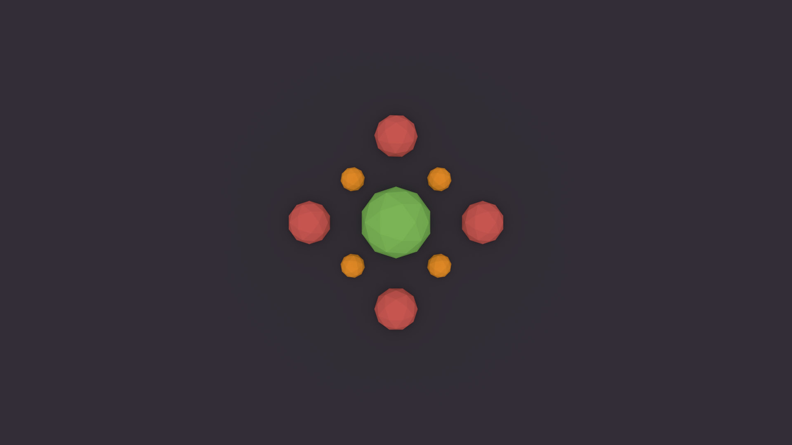
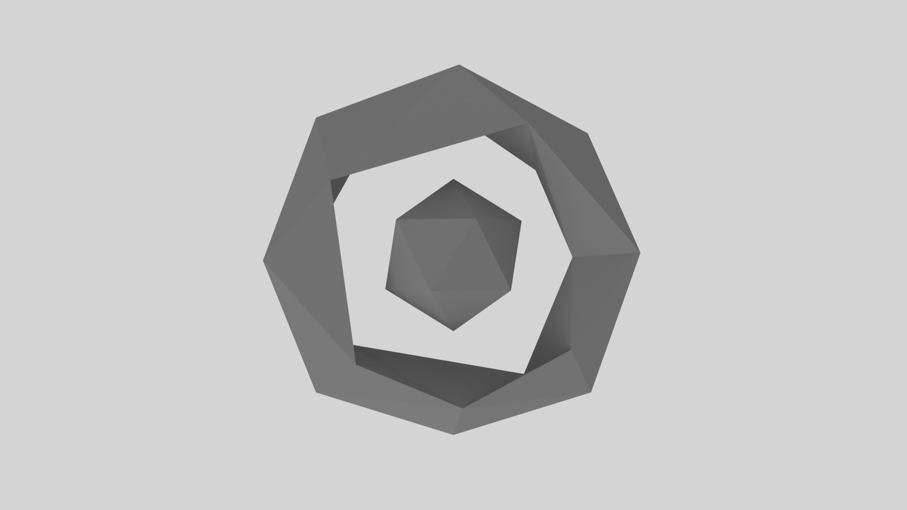

3D Renders
These are a selection of various 3d renders I have modelled and rendered within blender, these are mostly abstract and minimalist designs made from simple shapes.
This 3d render was one of my first creations and uses spheres with simple colours to create an effective pattern.
This 3d render is an experiment with simple geometric shapes, this render used a torus shape with an isosphere inside.
This 3d render was my first render where I followed a youtube tutorial to create a simple landscape with mountains.

This 3d render is a fairly rushed render using hexagons and a constrast of colours to create an effective wallpaper.
This 3d render was my first animation I created using two modified spheres orbiting, this video is run in 60 frames per second to create extermely smooth movement.
To Do List - JQUERY
This is a todo list created using HTML, CSS and JQUERY, this allows you to add new tasks, delete tasks, reorder tasks and cross of tasks. As this was my first attempt at a more interactive web application the JQUERY code was fairly unoptimized and could have been implemented better.
Square Loading Animation - CSS
This is a CSS animation using four cubes using a single CSS animation but with different animation delays to create step effect.
Sliding Loading Animation - CSS
This is CSS animation based on a fairly common animation style with columns in a wave effect, this went through many iterations with considerably cleaner code.